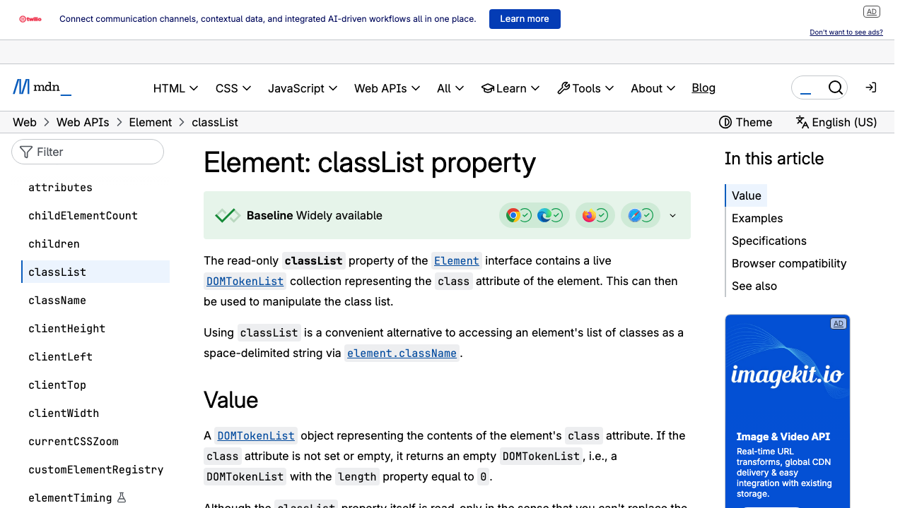

classList.toggle() and the UI patterns every website uses
max-height transitionssetTimeout and setInterval for timed actionsaria-expandedCSS does all the visual work. JavaScript just flips a switch.
/* State 1: Default — hidden */
.panel {
max-height: 0;
overflow: hidden;
transition: max-height 0.4s ease;
}
/* State 2: Open — visible */
.panel.open {
max-height: 500px;
}panel.classList.toggle('open');That's it. One line. The CSS transition fires automatically the moment the class changes.
This exact same pattern — CSS defines two states, JS toggles the class — powers almost every interactive element you've ever seen:
Toggle .dark-mode on body — CSS custom properties change every color at once
Toggle .open on a panel — max-height transitions reveal content smoothly
Toggle .nav-open on nav — slides in from the side on mobile
Toggle .active on tab + panel — one visible at a time
Toggle .open on overlay — fades in over the page
Toggle .visible on toast — slides up, auto-dismisses with setTimeout
These are the four methods you'll use to manage CSS classes from JavaScript:
| Method | What it does | Example |
|---|---|---|
.toggle('name') |
Adds the class if missing, removes it if present | el.classList.toggle('open') |
.add('name') |
Adds the class (no effect if already there) | el.classList.add('active') |
.remove('name') |
Removes the class (no effect if not there) | el.classList.remove('open') |
.contains('name') |
Returns true or false |
el.classList.contains('dark-mode') |
← click the button
Dark mode uses CSS custom properties with two selectors — the default and a .dark-mode class on <body>:
/* Light mode (default) */
:root {
--bg: #ffffff;
--text: #111111;
--card: #f5f5f5;
}
/* Dark mode (toggled by JS) */
body.dark-mode {
--bg: #1a1a2e;
--text: #eeeeee;
--card: #16213e;
}body {
background: var(--bg);
color: var(--text);
transition: background 0.3s,
color 0.3s;
}--bg, --text, and --card cascade to every element using them, that single class toggle updates the entire page at once.
document.body.classList.toggle('dark-mode');Update the button label with the ternary operator:
const isDark = document.body.classList.contains('dark-mode');
btn.textContent = isDark ? '☀ Light Mode' : '☾ Dark Mode';An accordion is a list of sections where clicking a heading reveals or hides its content.
max-height trick makes it animate smoothlymax-height trickYou can't transition height: auto. But you can transition max-height from 0 to a value larger than the content. The browser animates the change smoothly.
display: none? Because display can't be transitioned. The element just pops in/out with no animation. max-height: 0 + overflow: hidden gives you a smooth reveal.
.accordion-body {
max-height: 0;
overflow: hidden;
transition: max-height 0.35s ease;
}
.accordion-item.open .accordion-body {
max-height: 400px;
}headers.forEach(function(header) {
header.addEventListener('click', function() {
const item = header.parentElement;
// Close all others
document.querySelectorAll('.accordion-item')
.forEach(function(el) {
if (el !== item)
el.classList.remove('open');
});
// Toggle this one
item.classList.toggle('open');
});
});aria-expanded on the heading button — screen readers announce "expanded" or "collapsed" as users navigate.
It's a method that adds a CSS class if it's missing, and removes it if it's present. One method, both directions. This is the foundation of every interactive UI pattern.
You can't transition height: auto — the browser doesn't know what number to animate to. But max-height can be transitioned from 0 to any fixed value that's larger than the content.
It depends on the design. "Single-open" mode closes all others when one opens (like this demo). "Multi-open" mode lets multiple panels stay open at once — just skip the "close all others" loop.
Replace the CSS-only checkbox hack with clean, readable JavaScript.
:checked pseudo-class~) to show/hide navaria-expandedaria-expanded.nav-links {
position: fixed;
top: 0;
right: -100%;
width: 75%;
height: 100vh;
background: var(--card);
transition: right 0.3s ease;
padding-top: 5rem;
}
.nav-links.nav-open {
right: 0;
}menuBtn.addEventListener('click',
function() {
navLinks.classList.toggle('nav-open');
const isOpen = navLinks
.classList.contains('nav-open');
menuBtn.setAttribute(
'aria-expanded', isOpen
);
menuBtn.textContent =
isOpen ? '✕' : '☰';
});Shows one content panel at a time. Clicking a tab activates it and hides the rest.
.active from all, add to the one that was clickedtabs.forEach(function(tab) {
tab.addEventListener('click', function() {
// Deactivate all tabs and panels
tabs.forEach(function(t) { t.classList.remove('active'); });
panels.forEach(function(p) { p.classList.remove('active'); });
// Activate clicked tab + matching panel
tab.classList.add('active');
const targetId = tab.dataset.tab;
document.querySelector('#' + targetId).classList.add('active');
});
});data-tab attribute on each button stores the ID of the panel it controls. This is the same dataset pattern from the previous lessons.
HTML provides the structure — headings, paragraphs, lists, forms. Think of it as the skeleton of your page.
CSS provides the style — colors, fonts, layout, spacing, animations. It's the skin and clothing on the skeleton.
JavaScript provides the behavior — responding to clicks, validating forms, toggling classes. It's the brain and nervous system.
An overlay that appears on top of everything, requiring the user's attention before continuing.
opacity instead of display: none?display: none removes the element from layout instantly — there is nothing to transition. The element just pops in/out.
opacity: 0 + pointer-events: none keeps the element present but invisible and non-interactive. Now you can transition opacity for a smooth fade in/out.
.modal-overlay {
position: fixed;
inset: 0;
background: rgba(0,0,0,0.6);
display: flex;
align-items: center;
justify-content: center;
opacity: 0;
pointer-events: none;
transition: opacity 0.2s;
}
.modal-overlay.open {
opacity: 1;
pointer-events: auto;
}function openModal() {
overlay.classList.add('open');
}
function closeModal() {
overlay.classList.remove('open');
}
// Close on backdrop click
overlay.addEventListener('click',
function(event) {
if (event.target === overlay)
closeModal();
});event.target === overlay? Clicking inside the dialog box also fires the overlay's click handler (event bubbling). This check ensures we only close when the backdrop itself is clicked, not the dialog content.
This dialog appeared by adding .open to the overlay. Click ✕, the backdrop, or the button to close it.
setTimeout — Delayed ActionsSchedule a function to run once after a delay (in milliseconds).
setTimeout(function() {
// This runs after 3 seconds
toast.classList.remove('visible');
}, 3000); // 3000ms = 3 secondsfunction showToast(message) {
toast.textContent = message;
toast.classList.add('visible');
setTimeout(function() {
toast.classList.remove('visible');
}, 3000);
}clearTimeoutconst id = setTimeout(myFunc, 5000);
// User dismisses manually — cancel timer
clearTimeout(id);setInterval — Repeated ActionsSchedule a function to run repeatedly at a fixed interval.
const clockId = setInterval(function() {
updateClock();
}, 1000); // Every 1 secondclearInterval(clockId);setInterval must have a matching clearInterval.
function updateClock() {
const now = new Date();
const h = String(now.getHours())
.padStart(2, '0');
const m = String(now.getMinutes())
.padStart(2, '0');
const s = String(now.getSeconds())
.padStart(2, '0');
clock.textContent =
h + ':' + m + ':' + s;
}setTimeout | setInterval | |
|---|---|---|
| Runs | Once, after a delay | Repeatedly, at a fixed interval |
| Cancel with | clearTimeout(id) |
clearInterval(id) |
| Common uses | Toast auto-dismiss, delayed animation, debounce | Live clock, countdown timer, polling for updates |
| Danger | Low — runs once and stops | High — runs forever if you forget to clear it |
aria-expanded — Accessible TogglesOne line of JavaScript makes your interactive components usable by everyone.
When a button controls a collapsible section, aria-expanded tells screen readers whether the content is currently visible or hidden.
aria-expanded="true" → screen reader says "expanded"aria-expanded="false" → screen reader says "collapsed"// After toggling the class:
const isOpen = el.classList.contains('open');
btn.setAttribute(
'aria-expanded', isOpen
);<button
aria-expanded="false"
aria-controls="panel-1">
Section Title
</button>transition. JavaScript only adds or removes the class. Never write animation timings in JavaScript.aria-expanded on interactive componentsaria-expanded="true" when open and "false" when closed. One line makes your components accessible.setInterval should have a corresponding clearInterval. Forgetting this is a common source of subtle bugs and memory leaks.opacity + pointer-events for animated show/hidedisplay: none makes transitions impossible. Use opacity: 0; pointer-events: none; as the hidden state.closeModal() function called by all three is cleaner than duplicating logic.| Pattern | CSS Class | Lines of JS |
|---|---|---|
| Dark Mode Toggle | .dark-mode on body | 1 |
| Accordion | .open on item | ~5 |
| Hamburger Menu | .nav-open on nav | 4 |
| Tabs | .active on tab + panel | ~6 |
| Modal Dialog | .open on overlay | 5 |
| Toast Notification | .visible on toast | 3 + setTimeout |
Organizing JavaScript into reusable functions and combining them with loops to generate entire sections of HTML dynamically — turning an array of data into a styled card grid with just a few lines of code.